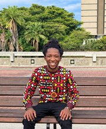
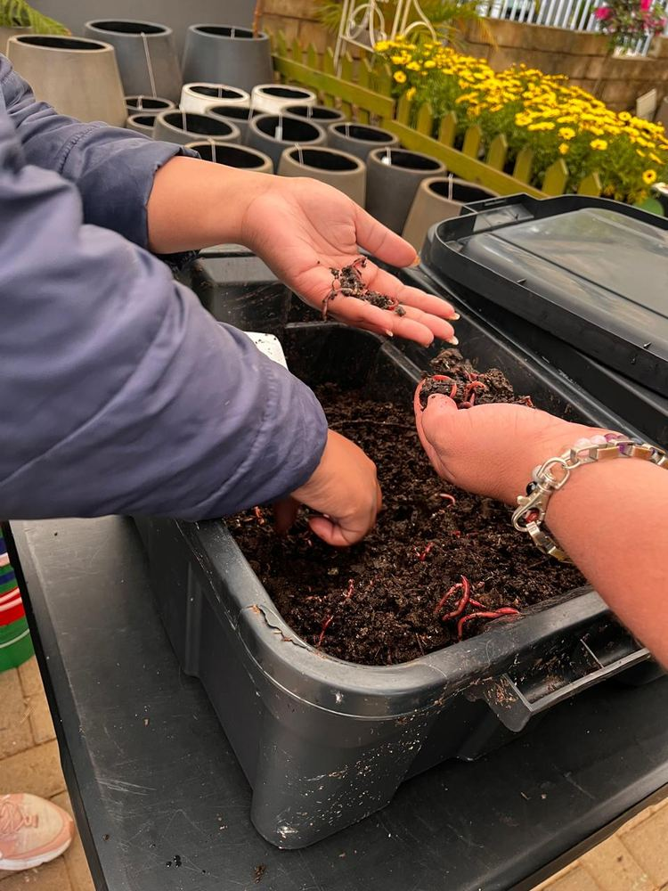

About ACCESS UFS
Students connecting learning with community.
ACCESS UFS is a student-driven programme that turns classroom learning into practical action for people and the places they share.
Who we are
A co-curricular programme
ACCESS UFS is a co-curricular programme at the University of the Free State. It gives students opportunities to take part in community engagement, volunteerism, action learning and practical projects.
The name stands for Active Community Citizens through Engaged Scholarship for Sustainability. Students learn by taking part, by working with others and by reflecting on what the community needs.

Background
Where ACCESS sits at UFS
ACCESS is a collaboration between the UFS Division of Student Affairs and the Directorate of Community Engagement. It is connected to engaged scholarship, which brings learning, citizenship and community engagement together.
In 2025 the Volunteerism Programme kicked off in February, followed by the Action Learning Group in March. UFS lists ACCESS sessions as running between March and October.
Sources: UFS news feature on ACCESS and UFS co-curricular programmes page.
The role we play
What ACCESS offers students
Community engagement
Projects and activities that connect university learning with real community needs.
Skills development
Workshops, practical engagement and shared experiences that build leadership and teamwork.
Social cohesion
Chances to take part, collaborate and make a positive contribution to the UFS community.
Areas of action
What students can get involved in
- Environmental Affairs
- Sustainable gardening
- Recycling and eco-bricks
- Climate work
- Vermiculture (worm farming)
- Health and Wellbeing
- Practical skills
- Health education
- Wellbeing support and community care
- Social Justice for Impact
- Dialogue and awareness
- Self-expression
- Community-based creative projects
Source: UFS co-curricular programmes page.
The people behind it
Who guides ACCESS
ACCESS is run for students, by students, and supported by a small team of UFS staff and mentors.

Lenosa MohapangMentor and facilitator
A story worth knowing
From student learning to the worm farm
ACCESS students developed worm farming into a practical sustainability project. UFS reported that it grew from small bins to a larger worm bed at the vegetable tunnels on the Bloemfontein Campus, and that a first order for worm tea was secured.
Source: UFS worm-farming project report.
Want to learn more?
See the programmes and activities pages for the ways students can take part.